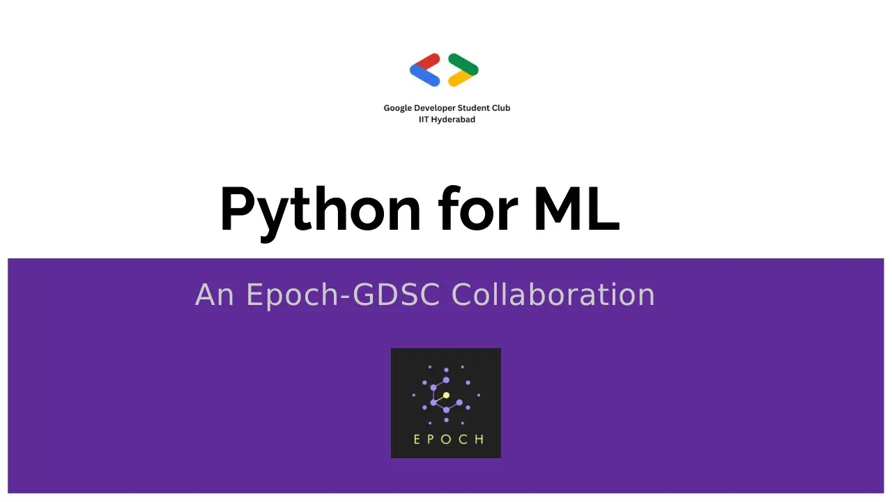

A hands-on session that builds on the Introduction to Python series by Lambda. It introduces NumPy and ends with a fun exercise on matrix transformations.

Community session, with GDSC · Epoch, IIT Hyderabad · Feb 5, 2023
A hands-on session that builds on the Introduction to Python series by Lambda. It introduces NumPy and ends with a fun exercise on matrix transformations.